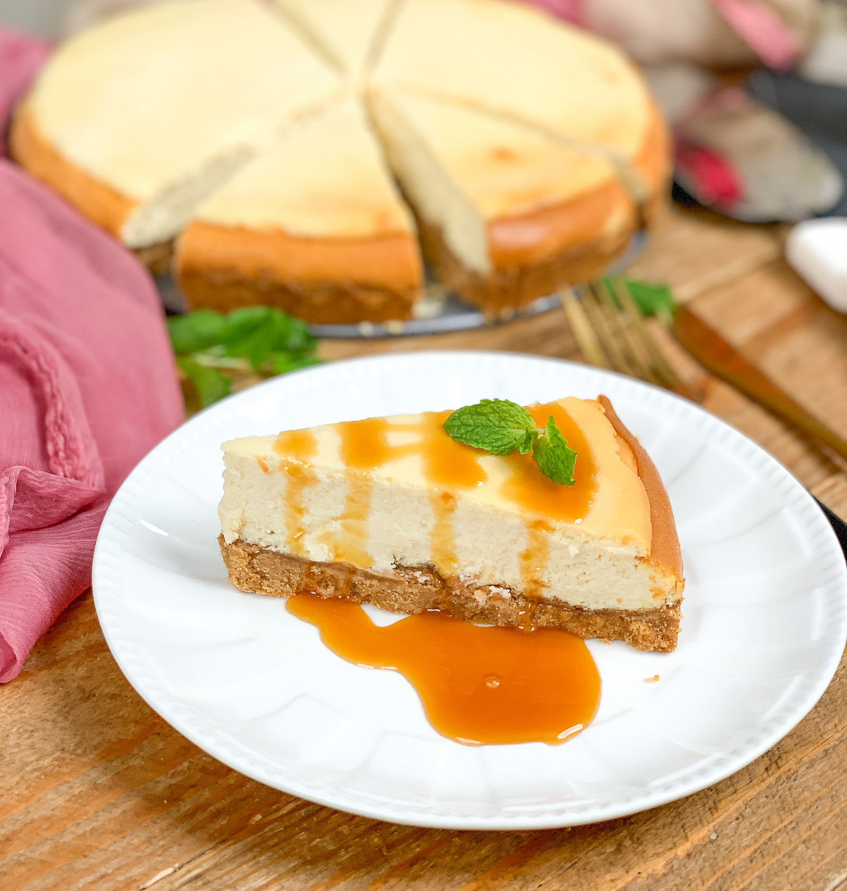

New York Style Cheesecake

Description
New York Style Cheesecake has a rich, dense, smooth and creamy consistency that is hard to resist. When in the US it would be very difficult to walk by Cheesecake Factory without wanting to eat cheesecake. I would for no given excuse miss having my favorite cheesecake.
Ingredients
- 360 grams Britannia Cream Cheese
- 1/2 cup Fresh cream
- 3/4 cup Caster Sugar
- 2 tablespoons All Purpose Flour
- 2 Whole Eggs , at room temperature
- 1 teaspoon Vanilla Extract
- 1 1/2 cups Digestive biscuit , crumbled into a coarse powder
- 4 tablespoons Butter (Salted) , softened
Steps
- To begin making the Classic New York Style Cheesecake Recipe, first we will make the crust for the cheesecake.
- In a medium sized bowl combine the biscuit crumbs and melted butter. Mix well to make a cheesecake crust mixture.
- Press the crumbs evenly over the bottom of a springform pan. Refrigerate the pan along with the crumbs for about 15 minutes while you make the filling.
- Into the bowl of the stand mixer place the cream cheese, sugar, and flour, cream, eggs and vanilla extract. Whisk until well blended and smooth peaks form.
- Remove the crust from the refrigerator and spoon the cheesecake filling mixture into the pan.
- Place the cheesecake into preheated oven at 180 degree Celcius. Bake for 40 to 45 minutes until almost set.
- Remove the cheesecake from the oven and allow it to cool completely.
- Refrigerate the cheesecake for at least 14 to 15 hours to set well before serving. You can cover the cheesecake with a cling wrap or foil and freeze for a few weeks as well.
- When you are ready to serve the New York Style Baked Cheesecake, serve it along with a strawberry compote.